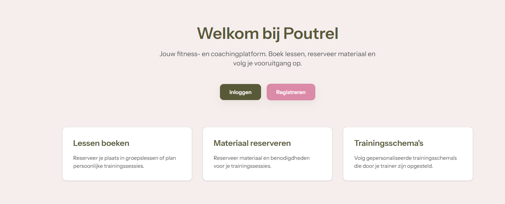

Context en achtergrond
Dit project maakte deel uit van SKIL2 (semester 2). Op basis van een uitgebreid analyse- en ontwerprapport hebben we een digitaal reserverings- en beheerplatform voor Poutrel uitgewerkt naar een werkende webapplicatie.
Wat is gerealiseerd?
Vanuit use cases, prioriteiten en het datamodel vertaalden we de analyse naar concrete functionaliteiten voor klanten, trainers en admin. De webapp bevat onder andere reservaties, beheerflows en automatische communicatie via e-mail.
Mijn bijdrage in het groepswerk
- In de startfase meegewerkt aan het datamodel en de vertaling van analyse naar technische structuur.
- Adminpagina's gebouwd voor het beheren van e-mailsjablonen en gebruikersbeheer.
- Planningspagina's ontwikkeld voor trainers en admin om lessen in te plannen.
- De e-mailtemplatewerking geïmplementeerd zodat op de juiste momenten e-mails met correcte inhoud worden verzonden.
Live demo: poutrel.lepuort.be

Wat ik geleerd heb
Hard skills
- Datamodellering
- Webapp ontwikkeling
- Admin interfaces bouwen
- Jira
- Laravel
- Livewire
- Tailwind CSS
Soft skills
- Samenwerken in team
- Overleg met stakeholders
- Probleemoplossend denken
- Werk structureren en prioriteren
- Prototype presenteren aan een niet-technische klant
- Werken met de Agile method in sprints